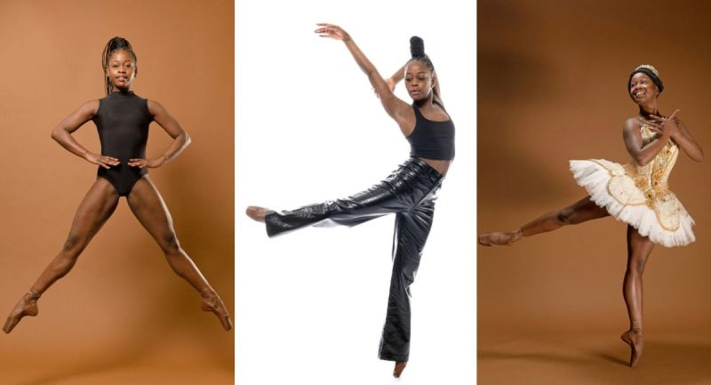

Michaela DePrince: From War Orphan to International Ballet Star
Michaela DePrince (1995–2024) was a world-renowned ballet dancer, author, and humanitarian whose remarkable journey captivated millions. Born in Sierra Leone during a period of civil unrest, Michaela’s life story exemplifies resilience, determination, and the transformative power of art. Her rise from an orphan facing unimaginable adversity to a celebrated ballerina on some of the world’s most prestigious stages is a testament to her talent and spirit, as well as the possibilities that arise from love and opportunity.
Michaela was born Mabinty Bangura in 1995, amid the brutal Sierra Leone Civil War. After the tragic loss of her parents, she was taken to an orphanage. In addition to the hardship she faced as an orphan, she was stigmatized for having vitiligo—a skin condition that causes patches of skin to lose pigmentation. Dubbed "the devil's child" due to superstitions surrounding the condition, she was often neglected and faced cruelty from those around her. Michaela's challenges could have deterred her spirit, but instead, they fostered a resilience that would shape her life. One day, she found a magazine image of a ballerina, symbolizing beauty, strength, and grace. She kept this photo as a beacon of hope, telling herself that someday she would be like that ballerina. Little did she know that this seemingly impossible dream would one day become her reality.
At age four, she was adopted by Elaine and Charles DePrince, an American couple committed to helping children from war-torn countries. The DePrinces brought Michaela to the United States, where she received love, stability, and encouragement. They nurtured her dream of becoming a dancer, enrolling her in ballet classes. Although Michaela faced challenges due to her race and her skin condition—ballet, a predominantly white field, has long struggled with issues of diversity—she refused to let discrimination stop her. Michaela trained rigorously, inspired by her childhood dream and the opportunity to defy stereotypes in the dance world. Her dedication, talent, and resilience paid off, as she excelled in her craft and quickly gained attention in the ballet community.
Her experiences made her an ardent advocate for children in war-torn regions. She traveled extensively, sharing her story and supporting initiatives for orphans and children affected by conflict. She authored the memoir Taking Flight: From War Orphan to Star Ballerina, co-written with her adoptive mother, Elaine DePrince. The book has inspired countless readers with its message of resilience and determination. Michaela’s story transcended the world of ballet; she became a role model for young people around the globe. Her commitment to her craft, her courage to confront prejudice, and her compassion for others underscored her legacy.
Michaela DePrince’s life is a powerful reminder of the resilience of the human spirit and the boundless potential within every child. Her achievements in the face of adversity have made her a symbol of hope and courage, particularly for young girls and aspiring dancers. Michaela’s legacy lives on in her impact on the world of ballet, her advocacy for children, and her ability to inspire generations to come.
In a world that so often seeks to divide, Michaela’s life serves as a reminder of the beauty in diversity, the strength in perseverance, and the unifying power of art.